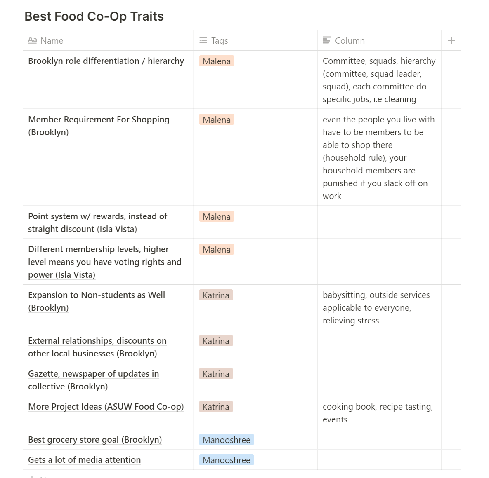
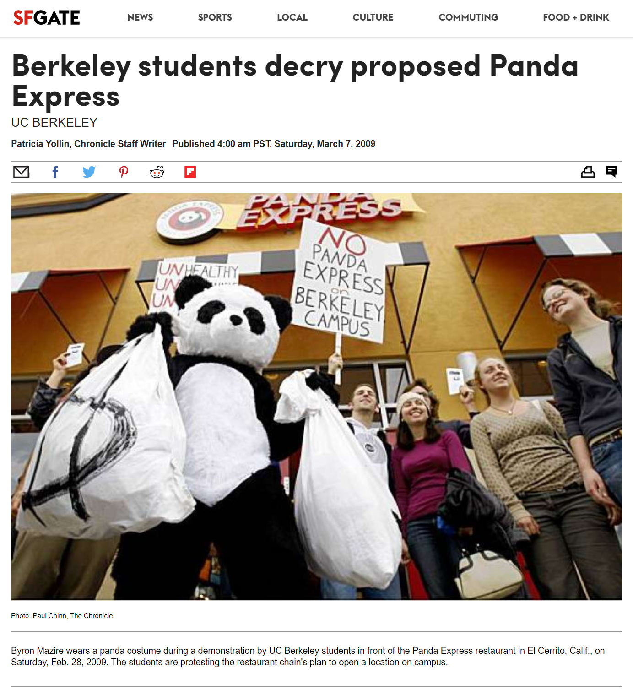
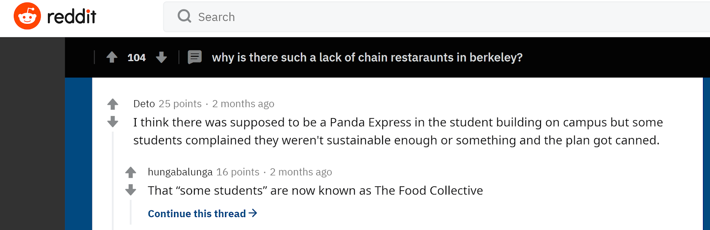
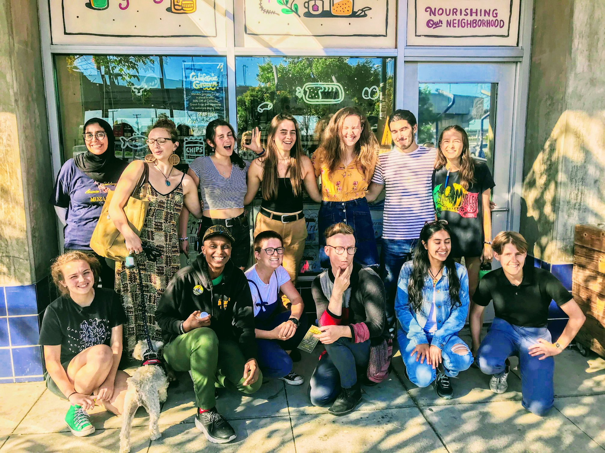
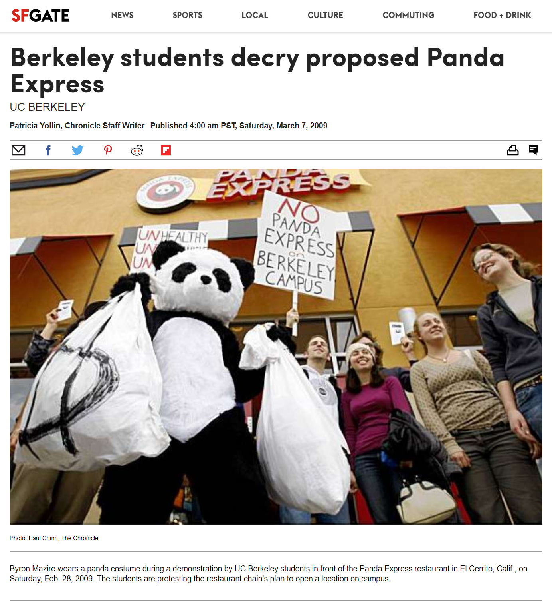
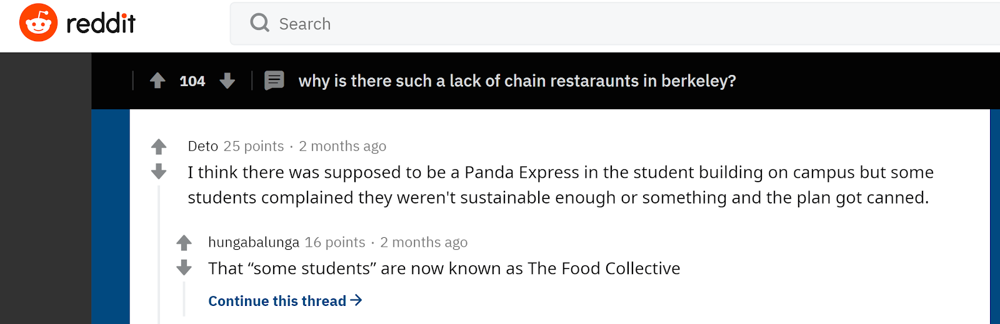
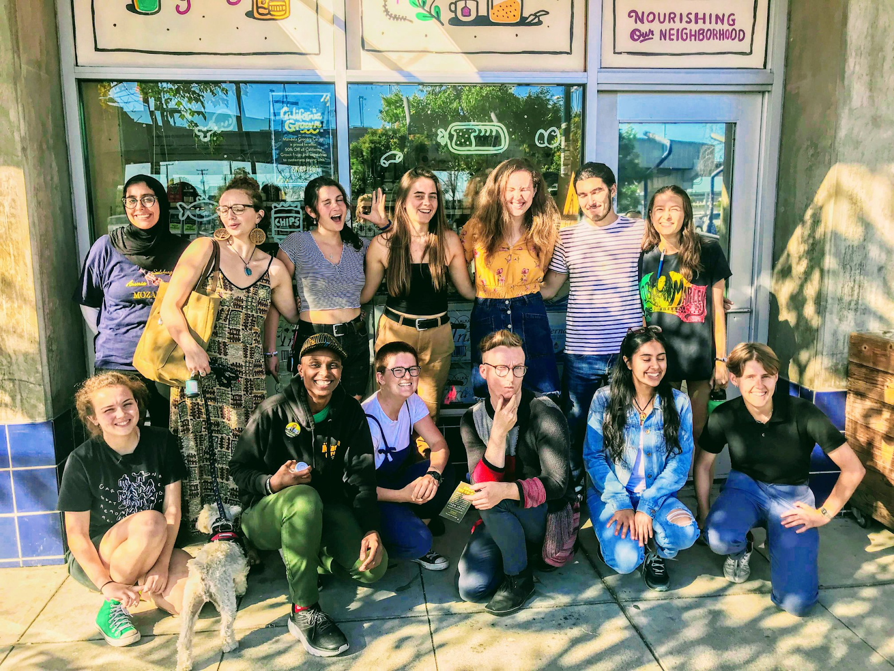

Literature Review
For our literature review, we found that cooperative success and function, seemed to generally stem from:
- A sense of community
- A strict membership work requirement
- A scaled benefits system
- A bureaucratic leadership structure
- Partnerships with other local businesses
Below is our notion table, where we formulated key traits and practices of other food cooperatives as a team

Below are the most important structural differences other food cooperatives have from BSFC that we took specific note of.
Brooklyn Food Co-Op:
-
Membership required to shop in grocery store,
including household rule
-
Your entire household
family has to be a member for you to be able to shop
at the collective. Moreover, if anyone in the family
evades their duties, the entire family loses
privileges from the food collective.
Isla Vista:
-
Point system with rewards, versus a discounts
-
Allows more scalability with commitment, which
may draw in prospective members that would seek more
freedom
-
Different membership tiers
-
Higher levels require more commitment, but
allow you to have more voting rights and power
in the decision making of the collective
ASUW Food Co-op:
-
More food knowledge and health engagement
activities
-
Examples include cooking books,
recipe tasting, and cooking events to attract
prospective members to the food collective (adds
the values of healthy eating and cooking to the
collective's pitch, versus it being solely an
institution to provide groceries to those in
need)
PSFC:
-
Services not limited to the co-op itself
-
Through external partnerships, PSFC members
also get discounts at other local businesses and
also provide services like free childcare to
children of Coop member.
User Interview of BSFC Membership
Next, we utilized this research to inform and modify polished survey questions, which we planned to administer to current BSFC members.
However, with the unexpected advent of the
coronavirus and stay at home policies, our team was
suddenly forced to work remotely. Moreover, we
received note from our project mentors about how a
survey might be difficult to administer due to lower
response rates from the now dispersed membership.
Instead, we modified our approach, adopting the use
of personal user interviews instead of the mass
distribution of a general survey. We took this
approach because we also believed that an
individualized personal interview would evince more
detailed and in depth insights, which would not be
possible to derive from basic general surveys.
Below are key insights we derived from previous BSFC membership.
It’s a really big group, so it’s hard to get to
know people. Adding on to this, meetings are not
consistent and there isn’t accountability for
attendance. Together, these things make it really
hard to really see the food collective as a cohesive
community.
- the large size of the collective and lax attendance restrictions for meetings have made it hard for members to feel connected with the BSFC as a true community
While the board members themselves are very
friendly, it is difficult to know who to talk to and
how, which makes it feel hard to be heard by the
leadership.
- the leadership may seem friendly and open, but general members might not have easy access to info regarding who to talk to and the overall structural communication process
Different levels of incentive that scale with your
commitment would probably increase membership
- members seem to prefer more flexibility with their membership, where commitment and governing voice in the club scale together
The discount wasn’t really the main reason for my
membership, it was more the ideas and principles
that the store stood for
- the ideas and the principles the food collective stands behind are important inherent aspects of the membership itself; the discount is not the sole reason for every member's patronage
User Interview of Key Figures Involved in Food Insecurity & Student Community
For our last step, we conducted personal interviews with organization officials that were directly involved with food collectives and food insecurity.
Below are key insights derived from the Vice President of Student Affairs for Berkeley ASUC
-
What is your background?
-
Started in student affairs branch her sophomore year
-
Manages outreach to specific communities providing basic needs/self-care and professional assistance on campus
-
Have you heard of the Berkeley Student Food Collective?
-
A lot of students don’t know about them
-
They offer a lot of cheap healthy options, but students don't know that they are a resource they can utilize
-
What do you think that the BSFC should do to increase membership?
-
Recommends that BSFC do more promotional work on campus, marketing their location and messaging through flyering or design work.
-
When students want something to eat quickly they often just go to Walgreens, even though Berkeley Student Collective is right there
-
Should conduct pop-up events like the Food Pantry, i.e the Food Pantry sets up a mini-grocery store stand at key areas around campus to raise awareness
-
“Sometimes it's not about students coming to you, but you going to students so they know where you are present.”
-
How can the BSFC increase its diversity?
-
BSFC is less in a marginalized community (later she clarifies she meant the black community) but is more in the Eco/sustainability community
-
BSFC is more appealing to white and Asian students because they are in the eco-friendly/sustainability spaces and often black students are not as welcome in those spaces (also not that many black students on campus 1-2% of total undergrad student population)
-
“There has to be more intentionality with serving people who are marginalized”
-
The Food Pantry went into the black community center and actively worked to build a bond and trust with those students.
-
“I really like your idea of possibly having barbeques or welcome events where the BSFC are on campus and being present…I think that is a wonderful idea personally.”
Below are key insights derived from the Director of COFED
-
What is COFED?
-
Started in 2011 in UC Berkeley in response to Panda Express
-
A joint organization that works with multiple food and residential coops, and has a strong emphasize on diversity and inclusion
-
What is your role in COFED?
-
Director of CoFED, operations
-
How can BSFC better engage marginalized groups and increase diversity with members?
-
Understand that POC and minorities are marginalized and minoritized. Privilege of others will make marginalized people “insecure” in a volunteer space
-
Really focus on education of the food apartheid
-
Talk about the 10% discount in terms of personal life experience change
-
“Food is a source of pain sometimes.. Where their next meal is coming from”
-
In your experience, how can food collectives best enhance member experience?
-
Decentralizing education and hosting workshops
-
Really emphasize bringing types of people you want and need into the collective
-
Connect community with work and making it intergenerational
-
Zoom cooking demo
 




